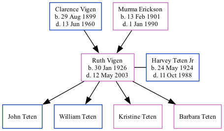

Ruth Carol Teten (née Vigen) 1926 - 2003
[ Home ] | [ Surnames Index ] | [ Family History ]The older of 2 children of Clarence Vigen and Murma Erickson, , Ruth was the grandmother of Stephanie Hardesty (née Teten), was born in Woodbury, Iowa on Jan 30, 19261,2,3,4,5 and. She had 4 surviving children with Harvey Teten Jr: John Jay, William, Kristine and Barbara.
During her life, she was living in Mapleton, Monona, Iowa in 19301; in Sioux City, Woodbury, Iowa in 19352; in Nebraska City, Otoe, Nebraska, USA on Apr 1, 19402; and in Olathe, KS in 19795.
She died on May 12, 2003 in Nebraska City4.
Parents
- Clarence Dewey was born on Aug 29, 1899
- Murma Olivia was born on Feb 13, 1901
Children
- John Jay
- William
- Kristine
- Barbara
Citations
- 1930 United States Federal Census Ancestry.com Operations Inc (Age: 4; Age: 4 2/12; Marital Status: Single; Relation to Head of House: Daughter)
- 1940 United States Federal Census Ancestry.com Operations, Inc. (Age: 14; Marital Status: Single; Relation to Head of House: Daughter)
- Iowa, Births and Christenings Index, 1857-1947 Ancestry.com Operations, Inc.
- Social Security Death Index Ancestry.com Operations Inc
- U.S. Public Records Index, Volume 1 Ancestry.com Operations, Inc.
Family Tree
Data (GEDCOM) maintained by Jay Weston Hannah, Omaha, Nebraska, USA.
Website generated by ged2site. Last updated on Jun 18, 2024.